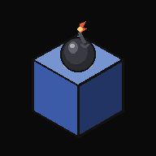

물리학으로 폭탄 피하기
홈 화면에 추가하면 앱처럼 아이콘을 눌러 바로 실행할 수 있어요.
아이폰 · 아이패드에서 설치하는 방법
1. 하단(또는 상단)의 공유 버튼을 눌러주세요
2. "홈 화면에 추가"를 선택해주세요
3. 오른쪽 위 "추가"를 누르면 완료돼요!
카카오톡 안에서는 설치 기능이 제한되어 있어요.
먼저 실제 브라우저로 열어주세요.
1. 우측 상단(또는 하단)의 버튼을 눌러주세요
2. "Safari로 열기"를 선택해주세요
3. 열린 브라우저에서 이 페이지가 다시 뜨면, 그때 안내에 따라 설치해주세요
이 브라우저에서는 자동 설치가 지원되지 않아요.
Chrome, Safari, Edge 등 최신 브라우저에서
다시 열어봐 주세요.